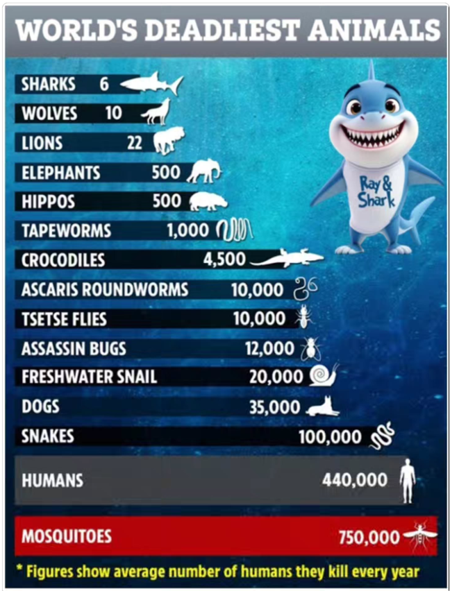
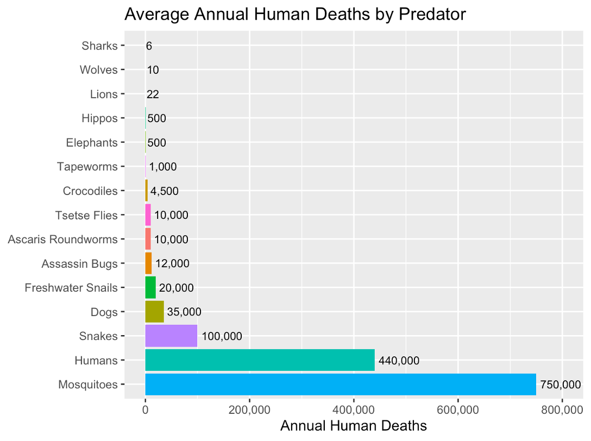
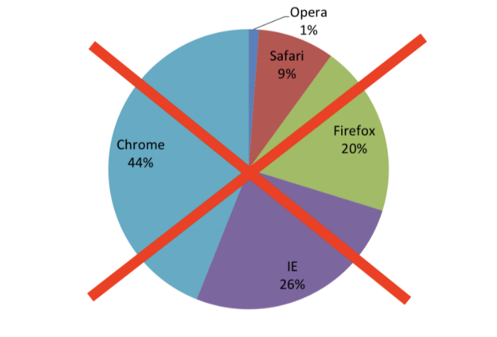
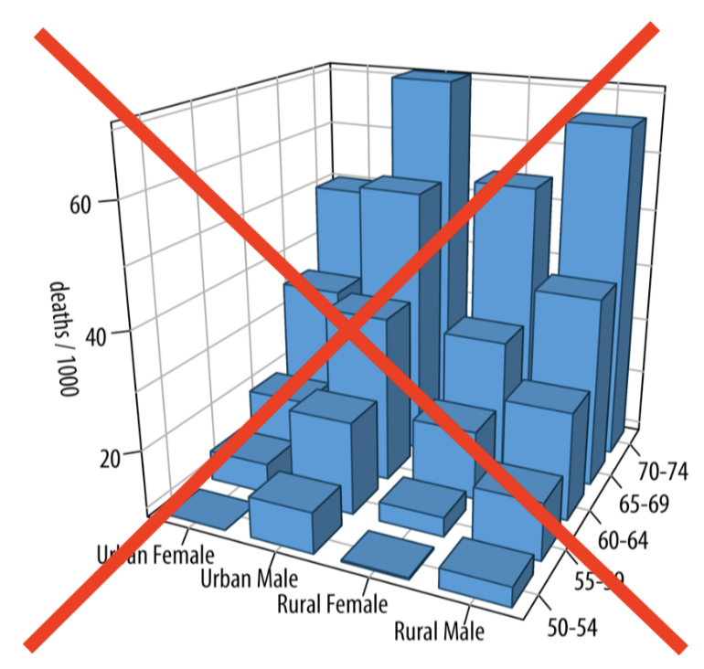

Dr. Grace Tompkins, Department of Statistics
By the end of this workshop, attendees should be able to:
ggplot2These slides are built with Quarto + WebR, meaning you can code in them without downloading any software!
Your code should stay on the web address, but I recommend saving a PDF by [right clicking] -> [Print…] -> [Save/Export to PDF] :)
For your own research/projects, I highly recommend checking out how to use RStudio! Here’s a video on how to use RStudio.
How do we accomplish this? Keep this SASS-y
Simple (plot is as simple as possible, minimizing distractions)
Accessible (colourblind-friendly pallettes are used, text is human-readable)
Specific (the purpose of the plot is clear, and explores a specific research question)
Scaled (small differences are not blown up, proportionality is maintained)
Which principles of good data visualization are met/violated here?


(Numbers based off previous image which is… questionably sourced :-) )
A crowd favourite package for plotting in R is ggplot2 (which has the ggplot() function).
There are three key aspects of plots in ggplot2:
aesthetic mappings: relates dataframe columns to visual properties
geometric objects: disctates how to display those visual properties (type of plot, for example)
scales: transforms variables, sets limits
We add these layers one by one using +
Important Note
Building plots is an iterative procedure. Try things, make mistakes, and refine!
We will explore the penguins data set from the palmerpenguins package in R.
An interesting research question may be how some of these measurements within a penguin are related. Let’s investigate the following:
Descriptive Visualizations
What species of penguins are in my data set? How many of each sex?
What does the distribution of bill length measurements look like?
Exploratory Visualizations
Do penguins with longer bills also tend to have wider bills?
Do certain species of penguin tend to have larger bills?
Typically a data visualization is 2-Dimensional (think of drawing a plot on a piece of paper). We can easily visualize the relationship between two variables.
What plot should I use?
Let’s visualize the types of penguins (species and sex) in our study.
If we wanted to show the counts of each penguin species, which plot should we use?
✅ A bar plot! We can plot this using geom_bar() in ggplot.
geom_bar())Let’s visualize how many penguins of each species we have in our data set
geom_bar()): Elevated!Let’s get the counts by sex, too!
Let’s describe the distribution of the bill lengths in our data set. What visualization should we use?
✅ Histogram! (Or… a box plot)
geom_hist())Let’s visualize bill depth and bill width, which are measured in millimetres.
What visualization should we use?
✅ Scatterplot! We plot this using the geom_point() object within ggplot.
geom_point())What about looking at this relationship between species? Do certain species of penguin tend to have larger bills?
We can group by colour/shape to see if there are trends within/between penguin species!
Are body mass and flipper lengths in penguins related? Does this vary by sex?
Avoid pie charts.
Avoid 3D visualizations
….. Absolutely avoid 3D pie charts


🛑 Before you click any links, save your work as a pdf!
[Right Click] -> […Print] -> [Save/Export as PDF] (or right click to open links in a new tab)
STAT545 Coursenotes on Data Visualization: https://ubc-stat.github.io/stat545/webpages/lectures_i/lec4_datavis.html (I teach STAT 545 A/B: Exploratory Data Analysis every fall, which is a data science-y course for non-statisticians)
Jenny Bryan’s “Dos and Don’ts of Making Effective Graphs”: https://stat545.com/effective-graphs.html
R4DataScience Notes on Data Viz: https://r4ds.had.co.nz/data-visualisation.html
LLMs like Claude, which are quite good at creating data visualizations.
My YouTube channel @proftompkins